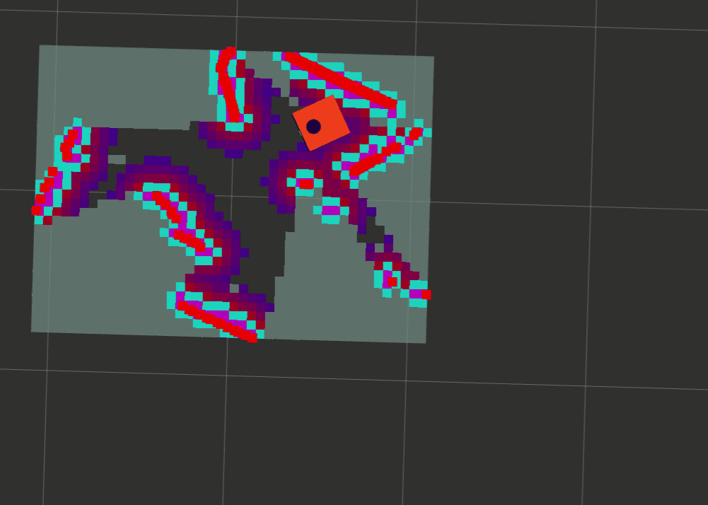
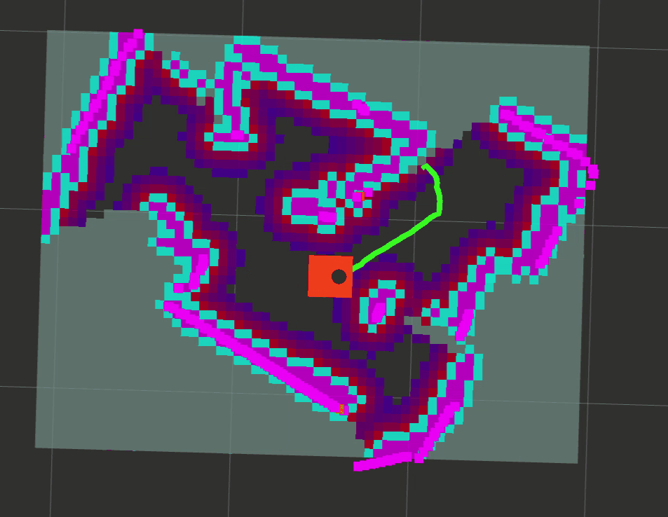
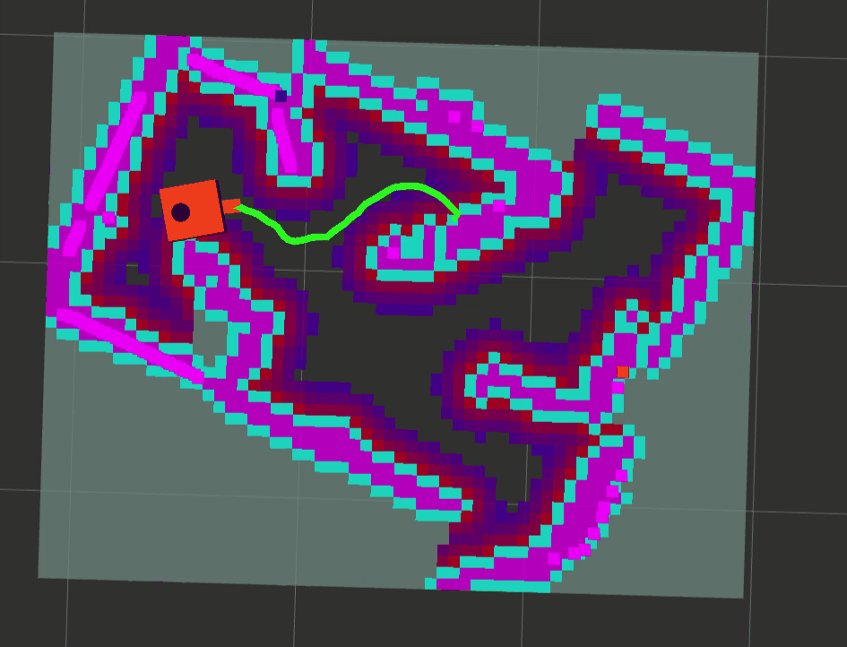

Saber a dónde ir no basta. Hay que encontrar un camino que no roce las paredes y convertirlo, varias veces por segundo, en velocidades que las ruedas puedan cumplir. Este tema muestra cómo lo hace Nav2 dentro del robot y qué quedó por medir.
NivelLectura
El mapa de costos global durante una exploración real, en bucle. La línea verde es la ruta que planifica Nav2. Fig. 4.7 de la tesis.
Una ruta global y velocidades que no chocan
Nav2 recibe una meta, calcula una ruta completa con A estrella sobre un mapa de costos, y un controlador local la sigue eligiendo velocidades que no choquen. Alrededor de cada obstáculo se infla una zona de costo para mantener distancia. En este robot esa zona es más angosta que la esquina del propio robot, y eso enseña algo sobre cómo se configura un sistema para un espacio pequeño. La navegación funcionó de punta a punta, aunque todavía no tiene un indicador propio.
59metas del explorador que Nav2 llegó a ejecutar en el robot real
0,15 mradio de inflación en el robot real, frente a 0,24 m de su esquina
8 Hzfrecuencia con que el controlador local elige velocidades
0,10 mdistancia a la que una meta se da por alcanzada
Las piezas de Nav2
Nav2 es el marco de navegación de referencia en ROS 22. Recibe una meta, calcula una ruta global y genera órdenes de velocidad para recorrerla evitando obstáculos 1. En este robot sus piezas principales son dos mapas de costos, uno global para planificar y uno local que se actualiza alrededor del robot, un planificador global llamado NavFn con A estrella activado, un controlador local llamado DWB y un navegador que coordina todo con un árbol de comportamiento.
Cómo se conectan los componentes de la navegación, desde el láser hasta los motores. Fig. 4.6 de la tesis.
Las órdenes que salen de Nav2 pasan por twist_mux, que da prioridad al mando manual, antes de llegar al controlador diferencial. Así una persona siempre puede retomar el control, una decisión de seguridad descrita en Anatomía del robot.
Un árbol de comportamiento en vez de un programa rígido
Un árbol de comportamiento encadena tareas como planificar, seguir la ruta y recuperarse de fallas, sin reescribir la lógica completa cada vez 3. Nació en los videojuegos para dar comportamiento a personajes y pasó a la robótica por la misma razón. Es modular y fácil de leer. En este robot, el árbol replanifica la ruta de forma periódica y aplica recuperaciones en dos niveles 1.
Mapas de costos e inflación
Un mapa de costos toma la rejilla de ocupación y le agrega un costo a cada celda según qué tan cerca está de un obstáculo. Las celdas del obstáculo tienen el costo máximo, que en Nav2 es 254. Las que están a menos del radio inscrito del robot, la distancia de su centro a su borde más cercano, reciben 253, porque el centro ahí ya implicaría choque. Más allá, el costo decae de forma exponencial hasta el radio de inflación, y después vale cero 4.

Fronteras detectadas en la fase inicial. Fig. 4.7 a.

Ruta planificada por Nav2 hacia una meta. Fig. 4.7 b.

Cobertura avanzada del recinto. Fig. 4.7 c.
El radio de inflación y la esquina del robot
Interactivo
Cambia el radio, gira el robot o muévelo. Se distinguen tres cosas: si la huella toca un obstáculo real, si entra en el margen inflado, que es solo una zona de seguridad, y el costo de la celda bajo el centro.
En un pasillo de ejemplo con celdas de 5 cm, la celda del obstáculo vale 254, las celdas a menos del radio inscrito de 0,08 m valen 253 y después el costo baja con la distancia hasta el radio de inflación. Con 0,15 m, el valor del robot real, la esquina delantera de la huella, a 0,24 m del centro, puede alcanzar celdas de costo 0 cerca de una pared. El simulador compara 0,15 m, 0,24 m y 0,55 m, el valor por defecto de Nav2, y separa el contacto físico de la huella con el margen inflado, que es una zona de seguridad del mapa y no un obstáculo.
En el robot real la huella configurada es un rectángulo que va de 8 cm detrás del centro a 20 cm por delante, con 13 cm a cada lado. Su radio inscrito es de unos 0,08 m y su esquina delantera queda a unos 0,24 m del centro. Con un radio de inflación de 0,15 m, menor que el valor de simulación, las celdas entre 0,15 y 0,24 m de una pared tienen costo cero aunque la esquina del robot pueda llegar a ellas 1.
El problema aparece porque el planificador global trata al robot como un punto, y el crítico de obstáculos de DWB revisa solo la celda bajo su centro. Ninguno revisa el contorno completo, así que la configuración no garantiza espacio para la huella girada en pasos estrechos. Su efecto en los ensayos no se cuantificó, y evaluarlo con una configuración acorde al espacio queda como trabajo futuro.
¿Por qué no simplemente subir el radio?
El valor por defecto de Nav2 es de 0,55 m. En un recinto pequeño, con pasillos angostos, un radio grande marca casi todo como costoso o bloqueado, y el robot deja de encontrar rutas. Elegir el radio es un compromiso entre seguridad y espacio útil, y se ajusta junto con el factor de decaimiento del costo. La guía de ajuste de Nav2 dedica una sección completa a ese par de parámetros 5.
A estrella: buscar la ruta
Sobre la rejilla, el planificador busca un camino desde la posición del robot hasta la meta. A estrella revisa las celdas en un orden inteligente. A cada celda candidata le asigna la suma de dos cosas, lo que ya cuesta llegar desde el origen, que se llama g, y una estimación de lo que falta hasta la meta, que se llama h. Siempre avanza primero por la celda con la menor suma, f = g + h 6. Las celdas que esperan su turno forman una cola de pendientes, el borde de la búsqueda.
Ficha del concepto: A estrella
Qué es
Un algoritmo que busca el camino de menor costo en una rejilla y revisa primero las celdas que parecen más prometedoras.
Para qué sirve
Que el planificador global de Nav2 encuentre una ruta desde el robot hasta la meta sobre el mapa de costos.
Cómo funciona
Ordena las celdas pendientes por f = g + h. g es el costo ya recorrido desde el origen y h una estimación de lo que falta hasta la meta.
En la grilla de ejemplo con un muro, Dijkstra revisa 291 celdas y A estrella 111 para encontrar la misma ruta de 27 pasos.
En este robot
NavFn con A estrella activado, espacio desconocido permitido y tolerancia de 0,5 m.
Límites
Nav2 suma los costos de su propia representación, cuyo escalamiento no se reconstruyó. Por eso la optimalidad de la ruta no se usa como criterio de validación, sino que el controlador local pueda seguirla.
A estrella frente a Dijkstra
Interactivo
Avanza de a un paso o reproduce cada búsqueda. En cada paso se ve la celda que se revisa, el camino que la alcanzó, g, y la estimación de lo que falta, h. Compara cuántas celdas revisa cada una para encontrar la misma ruta.
En una grilla de ejemplo con un muro entre el robot y la meta, Dijkstra revisa 291 celdas y A estrella 111 para encontrar la misma ruta de 27 pasos. Necesita JavaScript para avanzar paso a paso.
Dijkstra hace lo mismo pero sin la estimación, por eso se expande en todas direcciones 7. Si la estimación nunca supera lo que realmente falta, se dice que es admisible, y con ella A estrella garantiza la ruta de menor costo. En Nav2, el planificador NavFn tiene A estrella activado, permite planificar a través de espacio desconocido y acepta llegar hasta 0,5 m de la meta 1.
No usé la optimalidad de la ruta como criterio de validación, porque Nav2 suma los costos de su propio mapa con un escalamiento interno que no reconstruí. Lo que verifiqué es que la ruta global pudiera ser seguida por el controlador local. Para profundizar, la explicación interactiva de Red Blob Games es una de las mejores introducciones a A estrella que existen 8.
La ventana dinámica: seguir la ruta sin chocar
La ruta global es una línea sobre el mapa. El robot, en cambio, solo puede cambiar su velocidad un poco en cada instante. El enfoque de ventana dinámica considera solo las velocidades alcanzables desde el estado actual, simula hacia adelante la trayectoria de cada candidata y le pone un puntaje con varios criterios 9. Se elige la de menor puntaje 1.
Trayectorias candidatas y su puntaje
Interactivo
Cambia cuánto pesa cada criterio y mueve el obstáculo. La tabla muestra de qué se compone el puntaje de la trayectoria elegida.
La ventana dinámica prueba combinaciones de velocidad lineal y de giro alcanzables, proyecta cada trayectoria hacia adelante, descarta las que chocan y puntúa el resto con varios criterios, como seguir la ruta global, acercarse a la meta y alejarse de obstáculos. Elige la de menor puntaje. El simulador prueba 7 velocidades entre 0 y 0,15 m/s y 15 giros entre −0,35 y 0,35 rad/s, los límites de DWB en el robot real. Sus pesos son de demostración.
En el robot, DWB usa criterios de obstáculos, oscilación, alineación y distancia respecto de la ruta y de la meta. Algunos valores del robot real ayudan a entender su comportamiento.
Parámetro
Robot real
Qué significa
Frecuencia del controlador
8 Hz
Elige nuevas velocidades ocho veces por segundo.
Velocidad lineal máxima de DWB
0,15 m/s
Luego el controlador diferencial la recorta a 0,13 m/s.
Giro máximo
0,35 rad/s
Igual al límite del controlador diferencial.
Tolerancia de llegada
0,10 m
La meta se da por alcanzada a menos de 10 cm.
Tolerancia de orientación
3,14 rad
No exige una orientación final, solo la posición.
Verificador de progreso
0,05 m en 6 s
Si el robot no avanza 5 cm en 6 s, se declara una falla del controlador.
Tabla A5.1 de la tesis.
Cuando algo falla: recuperaciones
Si falla la planificación o el seguimiento, el árbol de comportamiento actúa primero sobre el mapa de costos correspondiente, porque muchas veces el problema es un obstáculo fantasma que ya no está. Si falla la navegación completa, ejecuta una secuencia de acciones cada vez más insistentes 1.
Limpiar globalBorra el mapa de costos en 1,5 m.
Limpiar localBorra el mapa local en 1,0 m.
Retroceder0,15 m a 0,05 m/s, máximo 8 s.
Girar0,8 rad para ver otra vez.
Esperar2 s antes de reintentar.
ReintentarVuelve a planificar la ruta.
Ubicarse en un mapa ya hecho
Durante la exploración, la posición la resuelve slam_toolbox mientras construye el mapa. Otra situación distinta es tener un mapa guardado y ubicarse dentro de él. Para eso Nav2 trae AMCL, la localización de Monte Carlo adaptativa, un filtro de partículas10. Cada partícula es una hipótesis de dónde está el robot. Las hipótesis se mueven con la odometría, se ponderan según cuánto calzan los barridos del láser con el mapa, y el remuestreo concentra las partículas donde es más probable que esté el robot.
En este trabajo AMCL quedó fuera del alcance. Está en la pila de navegación con sus valores por defecto, pero no lo ajusté ni lo ejecuté en los ensayos 1. Los robots de reparto en hospitales también pueden trabajar sobre mapas y rutas definidos de antemano. SLAM Toolbox ofrece otra forma de localizarse sobre un grafo guardado, con una ventana de observaciones recientes. Es una capacidad de la herramienta que no se ensayó aquí.
Qué se evaluó de la navegación
La navegación se evaluó sobre los destinos que genera el explorador, que es lo comprometido en el objetivo general. Nav2 llevó al robot hacia las metas del explorador en las cinco ejecuciones válidas, durante 12,7 min y 21,9 m de recorrido, sin intervención manual, y 59 metas llegaron a ejecutarse. De los 54 abortos, 53 cumplen el criterio temporal de asociación a reemplazos, pero el registro no permite contar por separado las fallas propias de Nav2 1. Por eso el resultado de esas metas no sirve como tasa de éxito, por una razón que se explica en Explorar por fronteras.
Lo evaluado y lo que exigiría medir con metas fijas
Datos de la tesis
Se evaluó la navegación hacia metas del explorador. Medir metas fijas exigiría metas definidas, referencias físicas medidas, una localización coherente en el marco del mapa, que puede venir de SLAM o de AMCL, y un registro independiente de la pose final.
Un protocolo con metas fijas necesita objetivos definidos, referencias físicas medidas y una localización coherente en el marco del mapa. Esa localización puede venir de SLAM durante el mapeo o de AMCL sobre un mapa guardado, porque Nav2 acepta metas mientras SLAM publica el mapa y la transformación map → odom, y su lanzador para Foxy permite elegir entre ambos modos 13. Por cada meta y repetición debería registrar el resultado de la acción, el error de posición final respecto de la marca, el tiempo hasta la meta y la longitud recorrida, como las métricas que usan Ngoc y otros y que describen Francis y otros 1415.
El script para ese ensayo quedó preparado, pero no aporta mediciones. No tiene registros de salida. Define tres escenarios con cinco repeticiones y clasifica cada una por el resultado de la acción y su duración, sin medir el error de posición final. Sus tres poses objetivo solo existen en coordenadas del mundo simulado, y la tolerancia que imprime para el modo real, 0,22 m, no coincide con los 0,10 m configurados en Nav2, aunque no interviene en la clasificación 1.
¿Cuántas repeticiones bastarían? Con esas tres metas y cinco repeticiones, 15 éxitos en 15 intentos permitirían afirmar con 95 % de confianza que la tasa de éxito supera el 78 %, según el intervalo de Clopper y Pearson 16. Ejecutarlo en un espacio mayor es el primer punto del trabajo futuro. Dicho de forma simple, la navegación funciona de punta a punta, y lo que falta es medirla.
El rover mantiene un mapa del terreno a su alrededor, elige su camino y replanifica para esquivar rocas. En el sol 200 de la misión recorrió por su cuenta 167 de 175 metros.
Usa un mapa de costos local y un planificador que replanifica mientras avanza, como Nav2 en este robot, pero a millones de kilómetros. Ver el caso completo.
Los números del texto llevan a esta lista. Qué es cada referencia de la tesis y para qué la usa el trabajo se explica en la bibliografía de la tesis.
TesisValderas Neculqueo, S. (2026). Navegación y exploración autónoma de interiores utilizando un robot móvil de tracción diferencial. UTEM. Secciones 3.9, 3.10, 4.5.2 a 4.5.5 y 5.4, Tablas 4.5, A5.1 y A5.2, y Anexos 5.2, 8.3 y 8.4.
ArtículoMacenski, S., Moore, T., Lu, D. V., Merzlyakov, A. y Ferguson, M. (2023). From the desks of ROS maintainers. Robotics and Autonomous Systems, 168. doi.org/10.1016/j.robot.2023.104493
LibroColledanchise, M. y Ögren, P. (2018). Behavior Trees in Robotics and AI: An Introduction. CRC Press. Versión abierta en arxiv.org/abs/1709.00084
DocumentaciónNav2. Inflation Layer Parameters y Costmap 2D. docs.nav2.org
ArtículoHart, P. E., Nilsson, N. J. y Raphael, B. (1968). A Formal Basis for the Heuristic Determination of Minimum Cost Paths. IEEE Transactions on Systems Science and Cybernetics, 4(2). doi.org/10.1109/TSSC.1968.300136
ArtículoDijkstra, E. W. (1959). A note on two problems in connexion with graphs. Numerische Mathematik, 1. doi.org/10.1007/BF01386390
TutorialRed Blob Games. Introduction to the A* Algorithm. redblobgames.com
ArtículoFox, D., Burgard, W. y Thrun, S. (1997). The dynamic window approach to collision avoidance. IEEE Robotics and Automation Magazine, 4(1). doi.org/10.1109/100.580977
LibroThrun, S., Burgard, W. y Fox, D. (2005). Probabilistic Robotics. MIT Press. Capítulo 8.
NASANASA JPL (2021). Perseverance's Sol 200 Auto-Nav Drive. jpl.nasa.gov
ArtículoNgoc, H. T., Vinh, N. N., Nguyen, N. T. y Quach, L.-D. (2023). Efficient Evaluation of SLAM Methods and Integration of Human Detection with YOLO Based on Multiple Optimization in ROS2. International Journal of Advanced Computer Science and Applications, 14(11). doi.org/10.14569/IJACSA.2023.0141130
ArtículoFrancis, A. y otros (2025). Principles and Guidelines for Evaluating Social Robot Navigation Algorithms. ACM Transactions on Human-Robot Interaction, 14(2). doi.org/10.1145/3700599
ArtículoVincent, J. A., Nishimura, H., Itkina, M., Shah, P., Schwager, M. y Kollar, T. (2024). How Generalizable Is My Behavior Cloning Policy? A Statistical Approach to Trustworthy Performance Evaluation. IEEE Robotics and Automation Letters, 9(10). doi.org/10.1109/LRA.2024.3445635